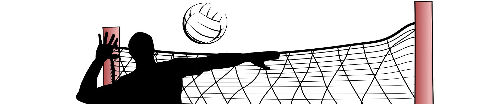

起源
排球運動起源於美國，1895年2月9日，由美國麻薩諸塞州霍利奧克基督教青年會幹事威廉·摩根發明，起初，選手分立在網球場球網的兩側，將排球托來托去，參加人數、擊球次數不限，比賽中網高2.43米（8英尺），這就是排球的雛形。
初期，排球被稱為Mintonette（小網子的意思），1896年，霍爾斯泰德教授根據比賽特點，提出改為Volleyball（空中擊球），就是現在的名稱Volleyball（排球），1900年，專為排球運動設計的球誕生，當時的正式用球圓周為25~27英寸（約63.5~68.8厘米），重量為9~12盎司（約255~346克），現代國際比賽用球的材料和製作工藝有很大改變，但整體重量大小差不多。
基本位置與作用
位置有:
"主攻手(大砲手)"
"快攻手(欄中)"
"舉球員"
"副攻手(舉球對角)"
"自由球員(L)"
比賽進行過程中，由主攻手、副攻手作為主要攻擊火力，舉球員負責進行二次傳球，提供攻擊手完美的球進行攻擊，快攻手作為次要攻擊輸出，速度與高度相較於主、副攻手快與高，自由球員通常在快攻手輪轉到後排時作為輪替，或者與防守較為缺乏的選手做更換。
主要違例與犯規
二次連擊：單人連續擊球兩次以上。
持球：球停留於手中（以裁判的個人主觀角度來決定）。
四次擊球：一方隊伍只能擊球3次（攔網觸球不算在內）超過三次以上就是犯規。
越網擊球：對方球員未完成攻擊性擊球前或同時，於對方空間觸球。
輪轉錯誤：該回合站位錯誤，攻擊方由主審裁定，防守方由副審裁定。
觸網：觸碰球網頂部白帶, 即算犯規。
後排違規：後排球員不可進行前排攻擊或者攔網，必須於三米線後方起跳攻擊。
世界排球錦標賽

男子組
●日本
●波蘭
●義大利
●阿根廷
●巴西
●斯洛維尼亞
●法國
●塞爾維亞
●荷蘭
●德國
●加拿大
●古巴
●伊朗
●保加利亞
●中國
女子組
●中國
●德國
●義大利
●日本
●荷蘭
●塞爾維亞
●南韓
●泰國
●土耳其
●美國
●保加利亞
●加拿大
●克羅埃西亞
●多明尼加
●波蘭